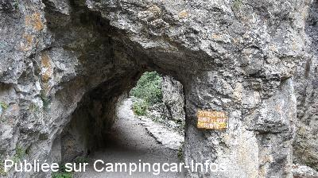
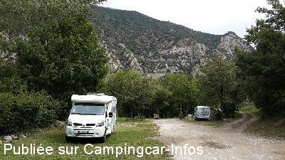
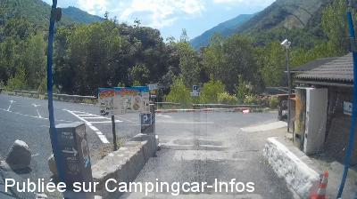
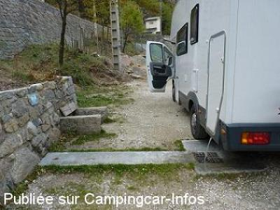
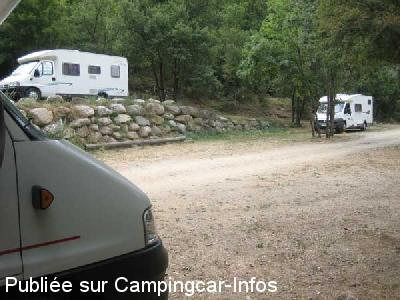
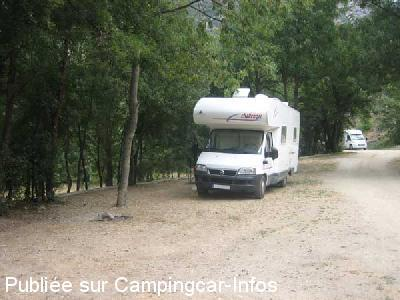

ASN = Aire de services avec stationnement nuit possible de :
THUÈS ENTRE VALLS
(N° 648)
Accès/adresse :
Accès N116
66360 THUÈS ENTRE VALLS
66360 THUÈS ENTRE VALLS
Latitude : (Nord) 42.52386° Décimaux ou 42° 31′ 25′′
Longitude : (Est) 2.22487° Décimaux ou 2° 13′ 29′′
Tarif : 2015
Stationnement : 10 €
Services gratuits
Barrière avec monnayeur
Type de borne : Artisanale
Services :


Autres informations :
Aire ombragée

Le 06/10/2015 par marco

Le 06/10/2015 par marco

Le 22/07/2014 par a&b

Le 10/12/2010 par La farfulla

Le 05/09/2008 par José

Le 05/09/2008 par José
de
marco
le 06/10/2015 :
Nous sommes passés début septembre ,pas de problème pour atteindre l'AIRE, mon C/C FAIT 6.60m ; à entrée des gorges de la Carença ,on ne peut faire mieux pour faire cette rando qui est magnifique;une fois rentrée dans les gorges arrivé au pont prendre à droite la montée(moins raide)allez jusqu'au prochain pont et revenez par l'autre rive ,si le coeur vous en dit.
l'accueil du responsable et de l'employé du bar sont très sympas et prêt à vous donner tous les renseignements .Merci à la Commune ,nous reviendrons.
Nous sommes passés début septembre ,pas de problème pour atteindre l'AIRE, mon C/C FAIT 6.60m ; à entrée des gorges de la Carença ,on ne peut faire mieux pour faire cette rando qui est magnifique;une fois rentrée dans les gorges arrivé au pont prendre à droite la montée(moins raide)allez jusqu'au prochain pont et revenez par l'autre rive ,si le coeur vous en dit.
l'accueil du responsable et de l'employé du bar sont très sympas et prêt à vous donner tous les renseignements .Merci à la Commune ,nous reviendrons.
de
deldicq
le 08/09/2015 :
passé en aout 2015 pour un camping-car 7 m 40 il faut faire très attention, 10 e sans électricité cela fait cher
passé en aout 2015 pour un camping-car 7 m 40 il faut faire très attention, 10 e sans électricité cela fait cher
de
Brassart Gilbert
le 29/09/2014 :
On en revient, avec un 7.25 et c'est vraiment limite . La traversée de Thuech est difficile et je plains les habitants.
On a payé 5€ et on pouvait rester 12 heures. Mais nous ne voulions que les services .
Aire très calme (surtout hors saison) dans un beau cadre .
On en revient, avec un 7.25 et c'est vraiment limite . La traversée de Thuech est difficile et je plains les habitants.
On a payé 5€ et on pouvait rester 12 heures. Mais nous ne voulions que les services .
Aire très calme (surtout hors saison) dans un beau cadre .
de
a&b
le 22/07/2014 :
Dober dan!
POZOR! Mislim, da so koordinate napačne. Mesto za CC del parkiri¨ča za vstop v kanjon. Do njega vodi ozka cesta skozi vasico. Edini dostop enak kot za osebna vozila. Za CC je - po vhodu - levo proti vhodu v kanjon in potem levo. Pod drevesi, ravno, vendar grobo. Cene storitev pravilne.
Dober dan!
POZOR! Mislim, da so koordinate napačne. Mesto za CC del parkiri¨ča za vstop v kanjon. Do njega vodi ozka cesta skozi vasico. Edini dostop enak kot za osebna vozila. Za CC je - po vhodu - levo proti vhodu v kanjon in potem levo. Pod drevesi, ravno, vendar grobo. Cene storitev pravilne.
de
PERROY
le 05/09/2013 :
superbe aire sauvage dans un très joli cadre calme
8 € les 24 h
eau potable vidange wc et vidange eaux usées
pas d'électricité
superbe ballade au départ de cette aire ( 3 à 4 h aller retour ) pour ceux qui ne sont pas sujets au vertige par le tracé par la corniche ( gorges de la caranca )
de plus de cette aire , vous pouvez prendre le train jaune de cerdagne jusqu'ou vous voulez dasns un sens ou dans l autre . en effet une halte train jaune dessert les gorges et donc cette aire .
accès un peu étroit mais il y a nettement pire ( il faut juste faire attention et le passage étroit est très court )
superbe aire sauvage dans un très joli cadre calme
8 € les 24 h
eau potable vidange wc et vidange eaux usées
pas d'électricité
superbe ballade au départ de cette aire ( 3 à 4 h aller retour ) pour ceux qui ne sont pas sujets au vertige par le tracé par la corniche ( gorges de la caranca )
de plus de cette aire , vous pouvez prendre le train jaune de cerdagne jusqu'ou vous voulez dasns un sens ou dans l autre . en effet une halte train jaune dessert les gorges et donc cette aire .
accès un peu étroit mais il y a nettement pire ( il faut juste faire attention et le passage étroit est très court )
de
clau
le 17/08/2013 :
Passé le 15/07/2013: vidange gratuite si on reste moins de 15min. Accès difficile, étroit et en montée. Aire réservée aux CC.
Passé le 15/07/2013: vidange gratuite si on reste moins de 15min. Accès difficile, étroit et en montée. Aire réservée aux CC.
de
LANSALOT
le 13/09/2011 :
Superbe endroit.
Cependant très étroit et je ne le conseillerai pas à un gros camping car (+ de 8m) Après chacun fait comme il veut....
En quittant la route il y a environ 400 m à rouler pour atteindre l'aire mais la ça monte c'est étroit et si on croise un autre véhicule..6€
Gros regret,je n'ai pû parcourir toutes les gorges car le vertige m'a rattrappé.
Superbe endroit.
Cependant très étroit et je ne le conseillerai pas à un gros camping car (+ de 8m) Après chacun fait comme il veut....
En quittant la route il y a environ 400 m à rouler pour atteindre l'aire mais la ça monte c'est étroit et si on croise un autre véhicule..6€
Gros regret,je n'ai pû parcourir toutes les gorges car le vertige m'a rattrappé.
de
Santi
le 10/12/2010 :
Buen aparcamiento para pernoctar después de una jornada de esquí. A 3Km de las pistas de Font-Romeu, a 50mt de una bolera acogedora, a 200mt el area de servicios en el supermercado Casino. Recomendable 100%. Hay un aviso que solo permite estacionar en el lado izq. de la calle
Buen aparcamiento para pernoctar después de una jornada de esquí. A 3Km de las pistas de Font-Romeu, a 50mt de una bolera acogedora, a 200mt el area de servicios en el supermercado Casino. Recomendable 100%. Hay un aviso que solo permite estacionar en el lado izq. de la calle
de
henri 38
le 11/11/2010 :
Aire magnifique, au calme, rien à dire. Bravo à la commune.
Aire magnifique, au calme, rien à dire. Bravo à la commune.
de
Papyvelo
le 11/10/2010 :
Superbe endroit très calme en septembre. La rando est magnifique. le tarif est maintenant de 6€ services gratuits. §
Superbe endroit très calme en septembre. La rando est magnifique. le tarif est maintenant de 6€ services gratuits. §
de
GILLES EGRET
le 25/10/2008 :
Bonsoir. Nous étions 3. Super bivouac au calme. La rando (3h) dans les gorges est fabuleuse. Merci à la commune et au gardien de sa gentillesse. Franchement, nous sommes camping-caristes depuis peu, et nous voulons bien payer 4€ pour n'avoir que des bivouacs comme celui-ci!
Bonsoir. Nous étions 3. Super bivouac au calme. La rando (3h) dans les gorges est fabuleuse. Merci à la commune et au gardien de sa gentillesse. Franchement, nous sommes camping-caristes depuis peu, et nous voulons bien payer 4€ pour n'avoir que des bivouacs comme celui-ci!
de
José
le 10/08/2008 :
Bonjour. Aire superbe rien à dire, ombragée spacieuse, tous est gratuit après acquittement du droit de parking de 4€ pour les CC. Ce parking sert de départ pour les Gorges de CARENÇA qui sont magnifiques et vertigineuses (attention au vertige !) et de plus gratuites (rare a notre époque), la gare du train jaune est juste derrière. Sur la nationale 116 à gauche en direction de FONT-ROMEU, ne pas hésiter prendre le pont interdit au + de 3,5T (attention aux grands gabarits) et continuer jusqu'au parking des gorges. Tout le haut est réservé exclusivement aux CC.
Merci à la municipalité.
Bonjour. Aire superbe rien à dire, ombragée spacieuse, tous est gratuit après acquittement du droit de parking de 4€ pour les CC. Ce parking sert de départ pour les Gorges de CARENÇA qui sont magnifiques et vertigineuses (attention au vertige !) et de plus gratuites (rare a notre époque), la gare du train jaune est juste derrière. Sur la nationale 116 à gauche en direction de FONT-ROMEU, ne pas hésiter prendre le pont interdit au + de 3,5T (attention aux grands gabarits) et continuer jusqu'au parking des gorges. Tout le haut est réservé exclusivement aux CC.
Merci à la municipalité.
de
DODARD
le 06/11/2007 :
Sublime est le terme qui convient pour cette aire : nous y avons passé une nuit calme, dans un cadre agréable. Par contre, nous y sommes arrivés de nuit et nous avons failli repartir : arrivés à la barrière, nous avons en vain (à pied) essayé d'apercevoir l'aire. Heureusement un CC qui connaissait le coin est arrivé derrière nous et nous a montré le chemin. L'aire se trouve en hauteur et n'est pas visible la nuit. N'hésitez pas à rentrer, suivre les flèches après bien entendu avoir réglé 4€ au monnayeur.
Sublime est le terme qui convient pour cette aire : nous y avons passé une nuit calme, dans un cadre agréable. Par contre, nous y sommes arrivés de nuit et nous avons failli repartir : arrivés à la barrière, nous avons en vain (à pied) essayé d'apercevoir l'aire. Heureusement un CC qui connaissait le coin est arrivé derrière nous et nous a montré le chemin. L'aire se trouve en hauteur et n'est pas visible la nuit. N'hésitez pas à rentrer, suivre les flèches après bien entendu avoir réglé 4€ au monnayeur.
de
dejean
le 19/07/2007 :
Aire très sympa mais attention aux CC de plus de 7 mètres car l'accès est très étroit.
Aire très sympa mais attention aux CC de plus de 7 mètres car l'accès est très étroit.
de
le 25/10/2006 :
Formidable, un accueil comme on voudrait en trouver partout, site très beau, gorge à visiter. Merci à monsieur le maire et à ses administrés, surtout pour une si petite commune.
Formidable, un accueil comme on voudrait en trouver partout, site très beau, gorge à visiter. Merci à monsieur le maire et à ses administrés, surtout pour une si petite commune.